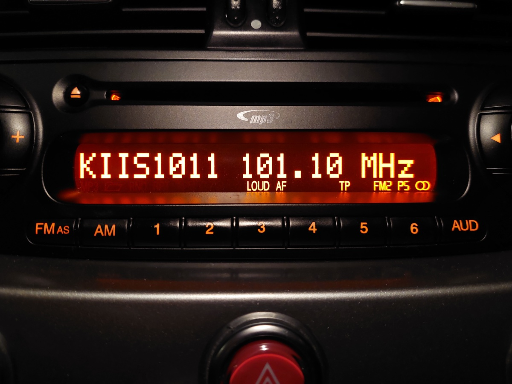
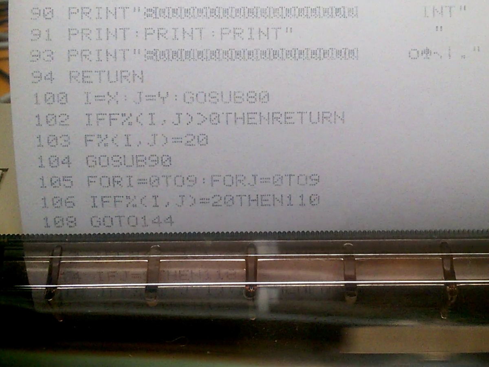
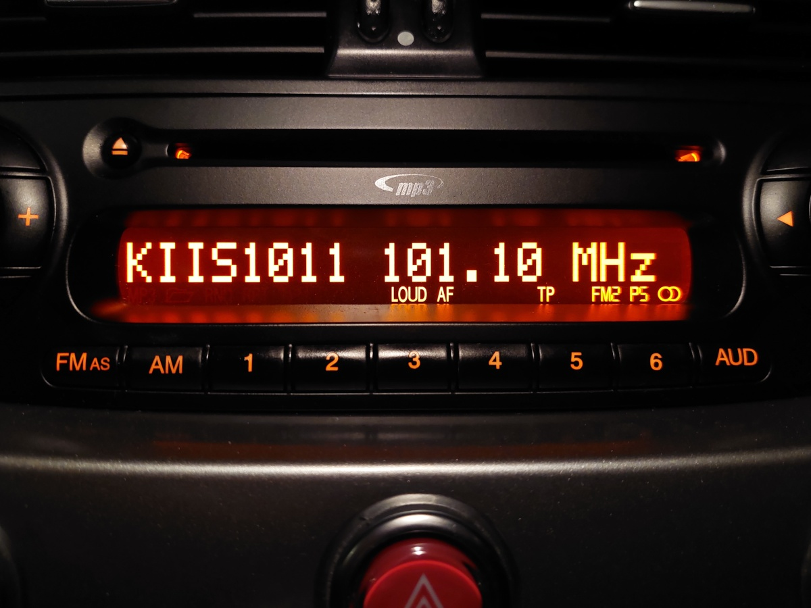
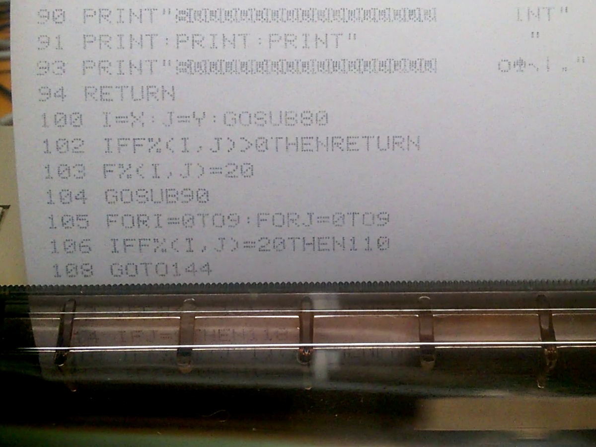

Inspiration
Matrix Sans is based on the classic 5×7 dot matrix fonts that originated in the 20th century with punched card machines, dot-matrix printers, light-up signs at stadiums, etc. and early computers and video equipment. Such fonts still surround us in the 21st century—for example: in LED displays of car radios and microwave ovens; VFDs in hi-fi and audiovisual equipment; electronic road signs and train station displays; flip-dot displays in buses and airports; LCDs in calculators and the “character LCD” modules found in all kinds of electronic equipment; and dot-matrix printers, which are still used to some extent, particularly for the expiry dates printed on food packaging.


 



Nowadays, “pixel” style fonts like this are very popular, particularly as they evoke nostalgia for retro computers and video games. Most currently available free (and even commercial) fonts in this style are lacking in refinement and glyph coverage, though. Matrix Sans was conceived in 2019 to satisfy the need for a free, versatile and high-quality dot-matrix style font. Dozens of existing designs were studied in preparation; the goal for this project was to balance consistency and sound design with quirkiness and authenticity to its historic sources.
Design philosophy
When designing the dot-matrix patterns for these fonts, I attempted to strike a balance between the following principles:
- authenticity
- quirkiness
- consistency
- sound design
Authenticity and quirkiness are often in conflict with consistency and sound design; the countless historical 5×7 fonts contain many unusual-looking (quirky) features, which by their nature are often inconsistent.
In order to retain the essence and charm of existing 5×7 fonts, yet rein in their oddities and avoid ugliness, none of these principles can be fully embraced. Instead, they serve as a guide while trying to choose the most coherent, well thought-out designs possible for this project.
Proportional spacing
Readers today expect visually consistent spacing around all characters, including narrow ones like 1 I i l and punctuation marks. Trading some authenticity for sound design, this font family is proportionally spaced, unlike most prior 5×7 fonts. The proportionally-spaced typefaces American Typewriter and OCR A Tribute are similarly inspired by classic monospaced designs, but take the further step of tweaking the proportions of the glyphs themselves, in the pursuit of a more conventional reading experience. This design doesn't go that far: all glyphs (and spaces between them) are still based strictly on a square grid. Where possible, glyphs have been kept to no more than 5 dots wide, which would allow for a monospaced version to be created with mostly the same glyphs.